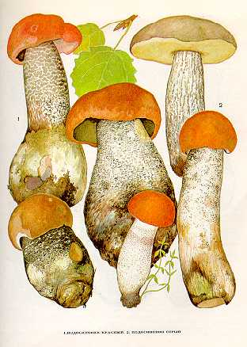

ПОДОСИНОВИК. ОСИНОВИК.
Местообитание этого гриба - лиственные и смешанные леса, особенно молодые осинники. Встречается часто и обильно со второй половины июня до октября. Растет большими колониями.
Шляпка до
Трубчатый слой белый или желтовато-белый. Споровый порошок бурый.
Ножка до
Гриб съедобен, второй категории. Употребляется так же, как и белый гриб.
Встречаются следующие виды подосиновика:
1. ПОДОСИНОВИК КРАСНЫЙ. ПОДОСИНОВИК
КРАСНО-БУРЫЙ.
Растет в широколиственных лесах с примесью осины с июля до конца сентября. Встречается
иногда большими группами.
Шляпка 5—25 см в диаметре, сначала полушаровидная, затем подушковидная, красная,
буровато-красная. Мякоть плотная, белая, на изломе сначала синеет, затем чернеет.
Ножка до
2. ПОДОСИНОВИК СЕРЫЙ.
Шляпка серая.